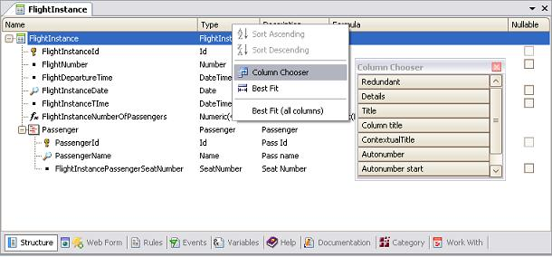

Transaction objects and Structured Data Type (SDT) objects are examples that contain a Structure Editor. All editing functions are available through the Edit menu option or with shortcut keys. There are, however, a few editing tips that may help you improve your typing speed and which are not available as menu options:
Many objects let you select the columns that are displayed in the structure. Right-clicking the column header opens a pop-up context menu featuring the Column Chooser option. When you select it, it shows the set of available, optional columns that have not been displayed yet. Double-clicking or dragging a column will make it available in the grid:  If the Properties window is opened, its content will change as you move through the structure, reflecting the property values of current items. You may change them at any time.
|
| Backlinks | ||
| My first BPM Application | ||
| My first BPM Application for Smart Devices | Transaction Structure | Transaction Web Form |
| Web Transactions |